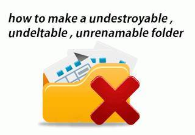

Create A Undeletable And Unrenamable Folders In Windows

In this tutorial you will learn cool and simple trick to Create an undeletable and unrenamable Folders In Windows operating system. Most of the Peoples are not aware that it is possible to create Undeletable, Unrenamable folder in windows without any software. To Test this concept just follow simple steps given below.
Read More ->>